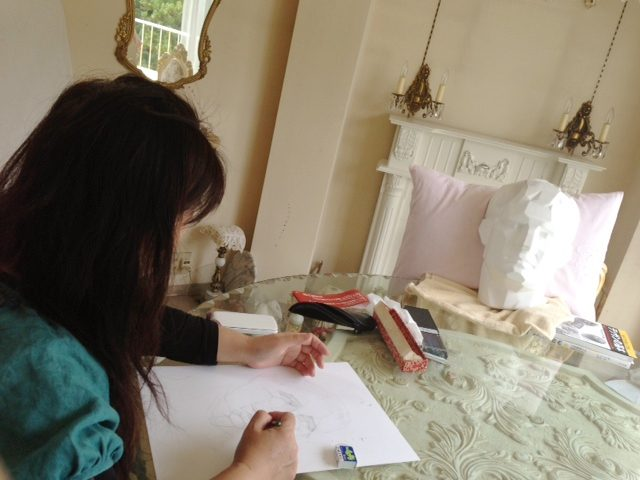

2012.11.07 13:15
デッサンにチャレンジ〜☆

ずっとずっと久しぶりにデッサンを描いてみました。
鉛筆を削って、練り消しゴムやケント紙を用意、・・・懐かしい空間。
先月、帰省中だった息子たちと一緒にデッサンした時の一コマです。
何年も描いていないと、情けないくらい感覚が鈍っていました。
特に多面体でできているこの石膏像のデッサンは難しかったです

ティーカップと木のスプーンの静物を描いたデッサン。
丸テーブルを囲んで描いたのですが、どの角度からでも描けるつもりでいたので
息子たちに場所選びを優先させたら、わたしは難しい構図になってしまいました。
構図ばかりではなく、タッチや表現も納得のいかない中途半端な出来上がり。
息子たちのほうが熟れたデッサンを描いていました。
思い出したように描いたのでは、やはりいい絵は描けないものですね。
やっぱり「継続は力なり」なのでしょう・・・。
お恥ずかしいですが、これから時どき絵を描きたい気持ちがあるので、
次回以降のステップアップのために拙いデッサンを載せておくことにします・・・。